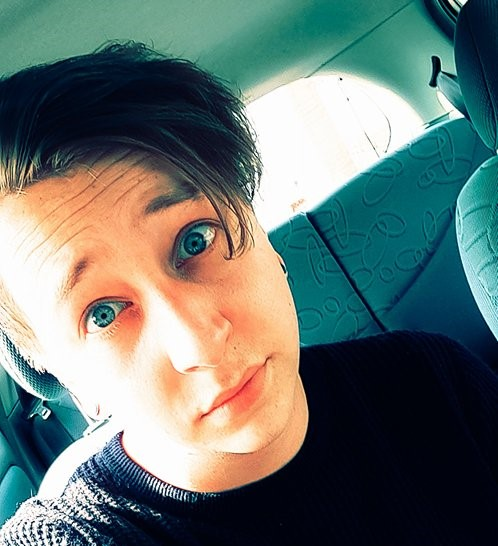

 Naast het feit dat ik in mijn vrije tijd meestal achter mijn computer verstopt zit en veel game, hou ik er ook vooral van om gezellig met vrienden en vriendinnen wat te drinken in het "Oh zo mooie en gezellige Breda"
Behalve momenteel deze studie volgen heb ik ook nog een bijbaan bij het lekkerste Steakhouse in Breda, genaamd; De Pauw. Daar sta ik meerdere avonden in de week als een "kok" eten te maken voor de mensen die dat bestellen en als ik niet in de keuken sta dan rij ik in een auto rond om de mensen dit eten te bezorgen.
Ik herken mezelf als een gemotiveerde jongeman met een voorliefde voor computers, IT en alles wat daarbij hoort. Creatief en pragmatisch ingesteld. Kom uit een groot gezin met een jonger broertje van 20, een zusje van 19 en nog een broertje van 17. Natuurlijk zijn mijn ouders ook in beeld, al 24 jaar getrouwd en nog steeds elkaars beste vriend en verliefd alsof ze begin 20 zijn.
Na dat ik deze studie afrond en uiteraard behaal, zou ik graag door willen floreren in deze business en sector door middel van een HBO opleiding te volgen en nog meer te leren waarna ik de expertise kan toepassen in de praktijk.